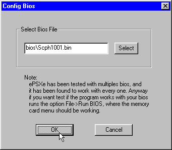
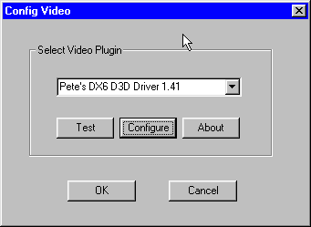

用了三天 ePSXe，我把 PS1 的老游戏又翻出来了
作为一个被复古游戏情怀绑架的中年玩家，ePSXe 是我近半年装过最省心的模拟器。从解压到跑通第一款《寂静岭》黑屏花屏全解决，这套流程值得给所有想补 PS1 功课的人一份真实体验。
上周收拾旧硬盘翻出一堆 PS1 镜像——.bin/.cue 三件套整整齐齐躺在一个叫「怀旧」的文件夹里。我先是点开一个叫 XEBRA 的轻量模拟器试了试，跑《最终幻想 VII》开场过场直接黑屏有声没画面。折腾了半小时改这改那，突然想起 ePSxe。
说实话，ePSxe 这个名字我第一次听到还是 2005 年的事——那会儿在一个游戏论坛上看到大神用它跑《GT 赛车 2》的截图。一转眼快二十年了，我以为它早就停更或者变得又胖又难用，结果去它的ePSxe官网一看，居然还在维护，最新版本 2.0.18 是去年底刚更的。
初印象：解压就能跑，这点我很意外
装 ePSxe 的过程简单到离谱：从官方下载拿一个 zip，解压到 D 盘任意位置，双击 exe 启动——没有安装向导、没有注册表、没有弹窗让你装 VC 运行库。我这台 Win11 机器上直接就起来了，界面还是那套经典的灰色窗口，和记忆里的样子几乎没变。
它会弹一个配置向导让你一步步选插件和 BIOS。插件下拉框里默认已经填好内置的 SPU Core 2.0 音效插件和一个 GPUCORE 视频插件，BIOS 让你选一个 .bin 文件——这个得自己去找 PS1 的固件镜像，合法获取的方式是把你手头那台退役 PS1 主机的 BIOS 读出来。我手头早就没实体机了，就跳过了这步，直接用模拟器内置的 HLE BIOS 顶上——大多数游戏用 HLE 也能跑，只有少数特别挑的才需要真实 BIOS。
整个配置向导走完不到三分钟，点 Run → ISO，选了《寂静岭》的 .cue 文件——画面直接出来了。没花屏、没黑屏、没调分辨率，直接就看到标题菜单了。我当时愣了一下：这就好了？

三个核心功能，说说真实体验
视频插件：Pete OpenGL2 是真的强，但调参有门槛
默认的 GPUCORE 内置插件跑起来没问题，我进《寂静岭》主菜单帧率稳在 60fps。但画面有点糊——那是 PS1 原生 320x240 分辨率的味道，边缘锯齿看得很清楚。
换了 Pete OpenGL2 之后立刻不一样了。内部分辨率拉到 4x，画面直接锐化了不止一个档次，纹理滤波选 xBR，3D 模型边缘的阶梯感基本消失了。过场动画里《寂静岭》那个标志性的雾效也渲染得更有层次——原来那一片白茫茫不是游戏本身就这样，是老显卡能力不够糊上去的。
不过我踩了个坑：Pete OpenGL2 有一堆 Special Fixes 开关，我看到ePSxe文档上写着「遇到画面问题开这里」就一股脑全开了，结果进《最终幻想 VII》战斗场景反而花屏了。后来老老实实按它说的——每次只开一个，跑游戏测试，确认好了再加下一个——才发现我真正需要的只是 Disable Framebuffer Readbacks 这一个开关，关掉之后其他几项问题也没了。这玩意儿的副作用比想象中大。
音效：内置插件够用，别折腾老的
音效这块我几乎没怎么调——Config → Sound 下拉框里直接选内置的 ePSXe SPU core 2.0，三个必勾项 Enable Sound、Enable CDDA Audio、Enable XA Audio 默认就勾着。进游戏一开声，背景音乐正常出来，过场语音也清楚。
之前有朋友推荐我换 Eternal SPU 说更精确，我试了试，说实话没听出区别。倒是 Pete DX2 Sound 这个老插件千万别用——文档上明确写着 2.0 系列用它可能导致音频不同步，我手贱选了一次，画面跑到 60fps 但音效慢了半拍，像看嘴型对不上的老译制片。
镜像格式：.chd 才是现在该用的
我那一堆老镜像都是 .bin/.cue 三件套，一套占 600 多兆。ePSXe 2.0.18 开始支持 .chd 格式，我好奇去查了一下——MAME 项目开发的无损压缩格式，体积能小 40% 左右，一张《GT 赛车 2》转完从 660MB 缩到 380MB，关键还是无损。
格式支持这块它做得挺实在的：.bin/.cue、.chd、.pbp（PSP 格式）、甚至 Alcohol 的 .mdf/.mds 都能读。唯独纯 .iso 格式别碰——只含数据轨没音频轨，游戏有画面没背景音乐。

适合谁 / 不适合谁
说实话，ePSxe 最适合两类人：第一类就是像我这样手里有一堆 PS1 老镜像、想快速重新玩起来的——它解压即跑、默认配置就够用，不想折腾的话一路默认选项也能拿到不错的画面；第二类是有一定动手能力、想把画面调到极致的——Pete 插件堆里那些 Special Fixes 开关虽然坑，但调对了的画面提升是肉眼可见的。
不太适合的是那些只想"一键云游戏"的玩家——它毕竟是个本地模拟器，你得自己准备 BIOS、自己找镜像文件、自己折腾插件，对完全没接触过模拟器生态的新手来说还是有点门槛的。另外 macOS 和 Linux 端口更新停在 2016 年了，功能和 Windows 端不对齐，如果你主要用 Mac 或者 Linux，要么装个虚拟机跑 Windows 版，要么考虑 DuckStation。
还有一点得提：Android 端口是独立更新的，手机上可以用触屏虚拟手柄或者蓝牙手柄，外出通勤的时候开一把《山脊赛车 4》补两局完全够用，还能开 Google Drive 云存档，手机上的进度回家能接着用。
最后说句实在的
ePSxe 不是市面上功能最多的 PS1 模拟器——DuckStation 支持更多平台、Mednafen 模拟更精确。但它在 Windows 端的那个绿色免安装 + 成熟插件生态组合，对于只想把老游戏翻出来玩的人来说，真的是最省心的选择。我这三天几乎没遇到什么解决不了的问题，唯一花了点时间的就是给 Pete 插件调那几个修复开关。
如果你也有一堆尘封的 PS1 镜像等着重见天日，或者只是想补一下那些当年没玩完的经典，去找它的官网拿一份压缩包就行——解压之后的第一步，就是 Run ISO。至于那份我翻了好几天的配置参考，已经同步到了 GitHub、Gitee 和 GitCode，选顺手的就行。